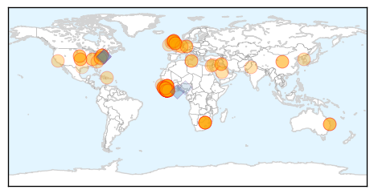
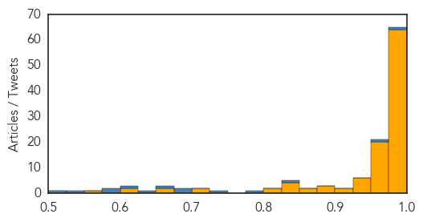
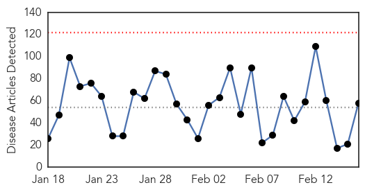

Ebola
30-Day Web Trend
0 alerts, 0 warnings

30-Day Twitter Trend
7 alerts, 1 warnings

Article Locations
Article Confidences
Top Articles:
- 0.999
- Report shows Davis Health was well-prepped for Ebola
- 0.999
- Ebola survivor brings message of understanding to Wayne State
- 0.999
- Ebola-Hit Nations Aim for No New Cases in 60 Days
- 0.999
- Ebola cases prompt mini-quarantine in Sierra Leone capital
- 0.998
- Still Fighting Ebola: A View from Liberia's Front Line
- 0.998
- San Diego Doctor Returns From Ebola Mission In Liberia
- 0.998
- American doctor exposed to Ebola to be monitored at an Omaha-area home
- 0.998
- Roundup: Chinese medical teams help to fight Ebola in Africa
- 0.998
- Chinese medical teams help to fight Ebola in Africa - Xinhua
- 0.998
- Second SA Ebola team to head to Sierra Leone
- 0.997
- Ebola survivor brings message of understanding to Wayne State
- 0.997
- Schools reopen as Liberia turns page on Ebola epidemic
- 0.996
- Schools reopen as Liberia turns page on Ebola epidemic
- 0.996
- Ebola crisis: Leaders of Guinea, Sierra Leone and Liberia pledge to eradicate virus 'within 60 days'
- 0.996
- UNDP administrator inspects Liberia over Ebola
- 0.996
- S. Africa dispatches more health workers to Ebola-affected countries
- 0.996
- S. Africa Sends 23 Health Workers to Treat Ebola in Sierra Leone
- 0.995
- Schools reopen as Liberia turns page on Ebola epidemic
- 0.995
- Kids go back to school in Liberia with strict anti-Ebola hygiene
- 0.994
- What Liberia needs from donors post-Ebola
- 0.994
- Schools reopen as Liberia turns page on Ebola epidemic
- 0.994
- Schools reopen in Ebola-hit Liberia
- 0.994
- Schools reopen as Liberia turns page on Ebola epidemic
- 0.994
- Schools reopen as Liberia turns page on Ebola epidemic
- 0.994
- Ebola outbreak: Liberia schools reopen after six months
- 0.994
- Ebola outbreak: Liberia schools reopen after six months
- 0.993
- Schools reopen as Liberia turns page on Ebola epidemic
- 0.993
- Schools reopen in Liberia after Ebola crisis
- 0.993
- Ebola expert warns the 'world must not drop its guard until the last case has been eradicated'
- 0.992
- Liberia schools reopen amid Ebola recovery
- 0.992
- Individual being monitored for Ebola in Omaha not showing any symptoms, officials say
- 0.992
- Schools reopen as Liberia turns page on Ebola epidemic
- 0.991
- Ventura doctor views Ebola-scarred Liberia as home
- 0.991
- Ebola in Scotland: Patient suspected of having deadly virus tests NEGATIVE at Edinburgh hospital
- 0.991
- Ebola in Scotland: Patient suspected of having deadly virus tests NEGATIVE at Edinburgh hospital
- 0.991
- Liberia schools reopen after 6-month Ebola closure
- 0.991
- Edinburgh patient tests negative for Ebola
- 0.989
- Liberia reopens schools after Ebola outbreak
- 0.988
- Kids go back to school in Liberia after Ebola closure
- 0.987
- Schools in Liberia Reopen After a Six-month Closure From Ebola
- 0.987
- S. Korean medics back to normal life after Ebola mission
- 0.987
- Liberia Schools Reopen After 6-Month Ebola Closure
- 0.987
- Guinea, Sierra Leone, Liberia target zero new Ebola cases in 60 days
- 0.986
- Liberian schools reopen after six-month closure during Ebola epidemic
- 0.986
- Liberian schools formally reopen after more than six months
- 0.984
- Mistrust, machetes thwart efforts to contain epidemic
- 0.984
- #Liberia schools reopen after six-month #Ebola closure
- 0.984
- Sierra Leone: UNDP Chief arrives in Sierra Leone for a three-day visit
- 0.983
- Ebola-hit nations pledge to eradicate virus in 60 days
- 0.981
- Liberian Schools Reopen After Six-Month Closure Due to Ebola
Showing top 50 articles...
Top Tweets:
- 0.985
- RT: Who's auditing NGO Ebola monies?! SL Gov see <5% of Ebola aid. "Sierra Leone Loses Track of Millions in Ebola Funds http:…
- 0.965
- Ebola-hit nations pledge to eradicate virus in 60 days - Daily Mail http://t.co/z9ew3ixKi5 ebola EVD
- 0.937
- Ebola Update: 22,999 confirmed, probable & suspected cases reported in 3 most affected countries, with 9,253 deaths. EbolaResponse
- 0.921
- Edinburgh patient tests negative for Ebola - BBC News http://t.co/ETYDlomqMZ ebola EVD
- 0.896
- Doctor who survived Ebola aims to improve disease treatment - WANE http://t.co/iUUof46saI ebola EVD
- 0.883
- Ebola crisis: Leaders of Guinea, Sierra Leone and Liberia pledge to eradicate ... - ABC Online http://t.co/D52VZwN4Ll ebola EVD
- 0.881
- San Diego Doctor Returns From Ebola Mission In Liberia - KPBS http://t.co/ljNPKd6Tp1 ebola EVD
- 0.866
- RT: Ebola: la fin n'est pas proche | Mathieu Perreault | Virus Ebola http://t.co/GTBFTtRI8U http://t.co/vTZsLfUa2u
- 0.842
- Doctor who survived Ebola aims to improve disease treatment - The Idaho Statesman http://t.co/qZ3QDrOXCI ebola EVD
- 0.823
- Ebola Epidemic Should End in May, Say Disease Modelers http://t.co/ssfCiM08rl
- 0.822
- SierraLeone: mise en quarantaine de 700 maisons à Freetown ebola http://t.co/GKPHcR2fMf via
- 0.819
- A third of Sierra Leone's Ebola budget unaccounted for, says report - The Guardian http://t.co/9ROo9CEENR ebola EVD
- 0.803
- ZMapp and the fight against Ebola - CBS News http://t.co/0dkbyjfC5O ebola EVD
- 0.793
- ElbowOutEbola News: Ebola outbreak: Liberia schools reopen after six months - http://t.co/LhsNv31N6k
- 0.788
- Rand Paul fact check: Vaccines, Israel and Ebola - Chicago Sun-Times http://t.co/ys0XGXM1xf ebola EVD
- 0.788
- RT: Latest Ebola No.s via, past 3d. Total/deaths/lab confrmd change Guinea:+20/+20/+27 Liberia:+76/+42/+2 SierraLeone: …
- 0.734
- SierraLeone: The Ebola Warriors in the SituationRoom @unmeer http://t.co/fOpKSKZNpU
- 0.732
- West African Leaders Vow ‘Zero Ebola Infections’ in 60 Days http://t.co/G2YUVoXRmr
- 0.722
- Ebola virus disease preparedness: Taking stock and moving forward. Meeting report http://t.co/BTgN80e0ld
- 0.715
- Predicting the extinction of Ebola spreading in Liberia due to mitigation strategie http://t.co/0eXNVno6Gu
- 0.678
- Possible Ebola exposure case being monitored in Omaha - KETV Omaha http://t.co/liAi5Mf5vt ebola EVD
- 0.671
- : Guiding Ebola patients to suitable health facilities: an SMS-based approach http://t.co/mZcVOoXQiU
- 0.642
- Individual being monitored for Ebola in Omaha not showing any symptoms ... - KETV Omaha http://t.co/sVtcMAamZ5 ebola EVD
- 0.607
- What Liberia needs from donors post-Ebola recovery https://t.co/adAS8fm8vy
- 0.606
- RT: Questioning NERC figures. Official Ebola figures suggest that 488 people recovered from the disease on the 14... http://t…
- 0.599
- Guinea, Liberia and SierraLeone presidents meet to tackle Ebola and recovery https://t.co/tBemroGfTU
- 0.550
- : Ebola-hit nations vow to eradicate virus 'within 60 days' http://t.co/HBlh6uAdkA via.. Please wake up: at best CONTROL!
- 0.533
- Ebola survivor brings message of understanding to Wayne State - Lansing State Journal http://t.co/IDTLBxlXJM ebola EVD
- 0.532
- .@WHO turns to foreign medical teams in last phase of combat against Ebola https://t.co/uMmW5QR2uf EbolaResponse
- 0.513
- Guinée, Liberia et SierraLeone veulent éradiquer Ebola d'ici le 15 avril http://t.co/kZers3gnfe via
Unknown
30-Day Web Trend
0 alerts, 0 warnings

30-Day Twitter Trend
0 alerts, 0 warnings

Article Locations

Article Confidences

Top Articles:
- 0.980
- Scarlet fever: Rise in cases across the Bristol area sparks warning
- 0.949
- Typhoid fever cases investigated in northwest Oklahoma
- 0.947
- Flu vaccine gives HK children moderate protection against H3N2: study - Headlines, features, photo and videos from ecns.cn
- 0.943
- Scarlet fever: Parents and schools urged to be vigilant as illness doubles in Nottingham
- 0.937
- Monkey fever, a new challenge for Kerala
- 0.928
- Seasonal mortality rate remains high
- 0.917
- Chicago Tribune
- 0.917
- Chicago Tribune
- 0.917
- Chicago Tribune
- 0.917
- Chicago Tribune
- 0.917
- Chicago Tribune
- 0.917
- Chicago Tribune
- 0.917
- Chicago Tribune
- 0.917
- Chicago Tribune
- 0.917
- Chicago Tribune
- 0.917
- Chicago Tribune
- 0.917
- Chicago Tribune
- 0.917
- Chicago Tribune
- 0.917
- Chicago Tribune
- 0.917
- Chicago Tribune
- 0.917
- Chicago Tribune
- 0.917
- Chicago Tribune
- 0.917
- Chicago Tribune
- 0.917
- Chicago Tribune
- 0.917
- Chicago Tribune
- 0.917
- Chicago Tribune
- 0.917
- Chicago Tribune
- 0.917
- Chicago Tribune
- 0.917
- Chicago Tribune
- 0.917
- Chicago Tribune
- 0.910
- The world windows to Thailand
- 0.910
- The world windows to Thailand
- 0.910
- The world windows to Thailand
- 0.910
- The world windows to Thailand
- 0.866
- Evacuation warning issued for coastal towns after Japan quake
- 0.866
- Obama offers condolences to Danish prime minister after Copenhagen attacks
- 0.866
- Ukrainian military rejects rebel offer of corridor out of Debaltseve
- 0.866
- Nigeria says recaptures northeast towns from Boko Haram
- 0.866
- Libyan air force commander says Libyan war planes bombed targets in Sirte, Ben Jawad
- 0.781
- Health warning issued for Te Wairewa/ Lake Forsyth
- 0.758
- KalaCORE launched to eliminate visceral leishmaniasis
- 0.702
- Health Department 2/16/2015 Metro Public Health Department will be closed Tuesday, February 17 due to Icy Road Conditions (City of Nashville, TN)
- 0.693
- Prostitutes drop allegations against Strauss-Kahn in pimping trial
- 0.693
- Egypt, France to conclude €5.2 billion deal for Rafale jets
- 0.652
- Synthetic vaccine sought for polio
- 0.648
- Scientists find new, aggressive strain of HIV in Cuba
- 0.636
- What's wrong with giving nurses a go at improving public healthcare?
- 0.623
- Synthetic vaccine sought to finally eradicate polio
- 0.618
- Bird flu strikes second California poultry farm
- 0.581
- This February, Dr. Michael Neeley Raises Awareness of Gum Disease and Modern Treatment Options in Honor of Gum Disease Awareness Month
Showing top 50 articles...
Top Tweets:
- 0.604
- RT: Agradecer a las autoridades de por la predisposición y compromiso en la búsqueda de objetivos de I + D. http://t…
- 0.501
- RT: KSA reports +5 MERS cases, including expat healthcare worker who caught it in hospital. 34 cases in the past week. h…